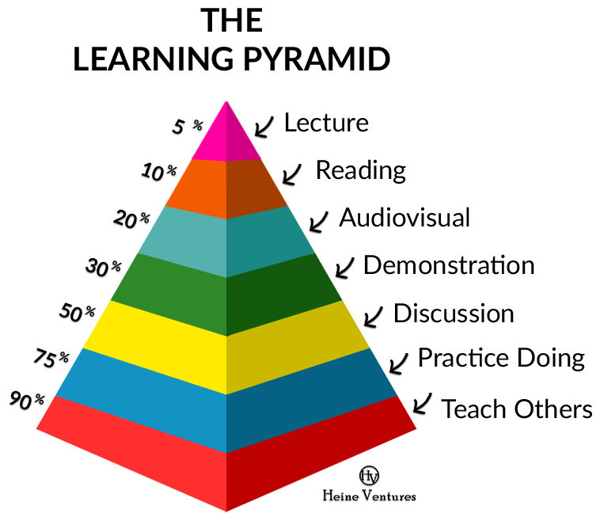

101camp5py
ch1.入港->蟒营™
200308 2042
101
Camp
比来时好

WoW
预约学员嗯哼…
@gargoyle101
对抗焦虑的有效办法?
BC
血案(Blood Case)
@msyixin
克服视而不见的最小经验
=> .[inti] yixin的起点
@yikeming
gollum入坑故事…
SM
Secret Mission
隐藏任务…
@kittypang
老老老师姐经验
CheatSheet
作弊条
@shankai2018
分享久违的磨难故事…
[FAQ] ssl module in Python is not available, 导致 pip 无法安装工具包, 未解决 (#72)
@heyi
分享有关字典/with/getopt/…高效探索经验?
눈_눈
提醒

panic
- git 中目录的迷思
- 探索中:
- 什么最累?
- 什么最吓人?
- 什么最有用?
提问的智慧
永恒的技巧
什么是蟒营™
持续内省
#83
@dboder 预约
[BC] 整个 Py3 运行时环境被强行 push 到课程仓库
怂
Follow u heart
从心而向
节奏
rhythm
习惯
4周+
weekly
嗯哼
周日
2042 zoom.us
- WoW
- 单口/要点/…
- ++日报当周追踪
周一
2042 周刊发布
- 内部刊物
- ++新预告直播 Issue
周三
2000->2042
定长答疑
daily
嗯哼
- 固定时间
- 10+小时/周
- 解决问题
- 持续记录
- 认真交流
d0
每周从星期日开始
修整/新任务
d1
破解
分析/理解/定义
d2
探索
搜索/查阅/规划
d3
检验
探索/实验/决策
d4
实现
开发/测试/迭代
d5
作品
迭代/优化/文档
d6
生活
窜门/炫耀/休息
环境
gitlab -> 用之, 弗学
- 微信群/zoom …触发/救急
- Issue -> 发问/起/记录/…
- repo. -> 追踪/协同/原稿/…
- Wiki -> 交付/沉淀/复用/..
- Slack -> 日常嗯哼/提醒
- ggroups -> 异步嗯哼/提醒/发布/通知

怼
Right in heart
对心而诺

窜门儿
门儿在哪?
- Issue
- 分支
- wiki
- 列表
- Slack
- …
守礼
- 收拾好家, 再出门
- 别人家, 别乱动
- 动也可以…
- 别惊悚
抄
即正义
少手
站在他人肩上
问题是…
站
立足自己
合理占据他人智慧成果
灵魂三问
- 我是谁
- 我在哪
- 要去哪
5W1H
- 当前状态
- 当前输入
- 应该输出
IDD
Issue Driver Develop

emoji
表情符


ec959102
Commit-Comments 最自然

Issue
演化..容器
- 计划
- 笔记
- 追踪
- 索引
- …
IDD0
直觉分解
- [ ] 输入
- [ ] 处置
- [ ] 输出
IDD1
探索方案
- [ ] 输入
- [ ] ?h git
- [ ] ?h 网页
- [ ] ?h API
- [ ] 处置
- [ ] 输出
IDD2
追踪检验
- [ ] 输入
- [ ] 1.5h git
- [x] CLI
- [x] stdout/stderr/..
- [ ] sys 模块
- [ ] …
- [ ] ?h 网页
- [ ] ?h API
- [ ] 1.5h git
- [ ] 处置
- [ ] 输出
IDD3
索引证据
- [ ] 输入
- [ ] 1.5h git
- [x] CLI
- [x] stdout/stderr/..
- [x] 1.0h sys 模块 ~ 4e159745
- [ ] …
- [ ] ?h 网页
- [ ] ?h API
- [ ] 1.5h git
- [ ] 处置
- [ ] 输出
Driver
思考驱动行为
实践检验思考
知行合一
无分表里

分组
4人以内
目标聚合
相亲
科学速配
- 展示自我
- 快速沟通
- 对眼即合
协作
预约->抄
最帮助?
误解为先
只有自己的, 才能运用
最有用
认真嗯哼的技法

(￣▽￣)
눈_눈
提醒
统一ID
微信/gitlab/Slack 统一
马甲只是情趣…
分组
4人以内
目标聚合
内省
什么是蟒营?
不忘初心…
幻灯
NOT PPT
38节

380

推荐奖励
- 成功报名一位学员,兑换专属42分钟1v1
- 有效期42个月
- 可转赠,可积累合并
- 不限Python 技术内容
- 嘦提前42小时预约
- 可指定助教
是也乎
- 200308 pub->5py
- 191130 pub
- 191129 re-init.
- 190922 fix-mapping
- 190921 pub
- 190919 re-init.
- 190727 pub
- 190721 init.
- 190427 for 1py

GoogleGroups
Slack
- ? 微信
- 为什么不应该使用QQ进行技术交流
醉点
罪之礼称…
视而不见
最大原醉
如何学?
什么是“学会”? 学会, 什么…
学习如何学
self-teching
编程是门手艺
Aristotle
“For the things we have to learn before we can do them, we learn by doing them.”
亚里士多德
“我们通过做来学习
我们必须学习去做的…”
~ 伦理学
编程
Pythonic
教练
助教 ~= 导游
最困难?
- 不懂
- 不理解
- 不敢
- 不…
可检验
即时, 高频:
编写
^ `-> 运行
| `-> 观察
| /
+-- 修正 <-+Levels
知识层级
Unknow Unknow
不知己不知
Unknow Know
不知己知何
Know Knowed
知己何已知
Know Unknow
知己何不知